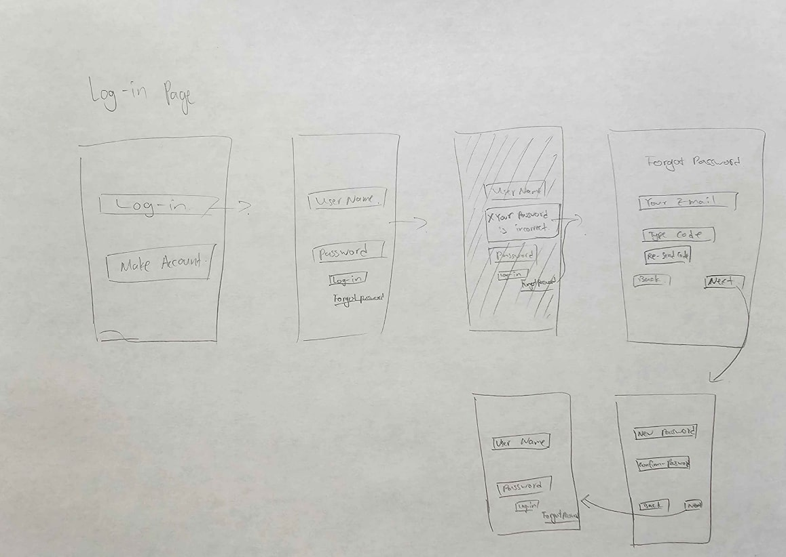
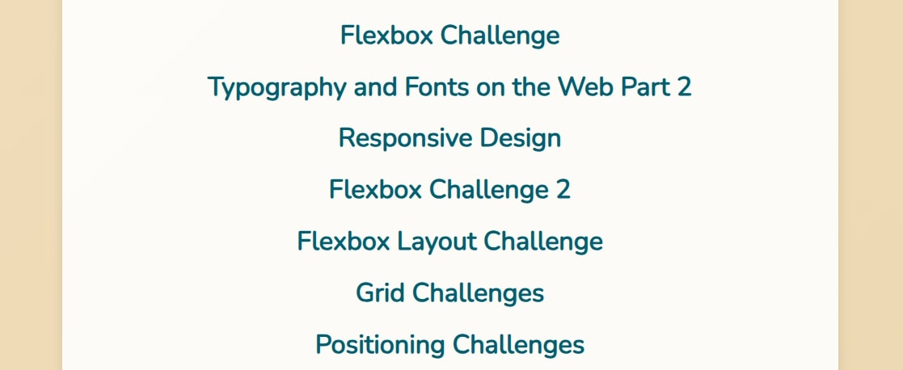
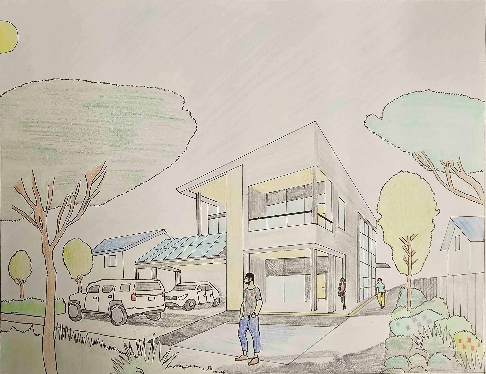

The Impact of UI/UX Design in Website Development

In this blog post, I explore the role of UI/UX design and how it influences user engagement and website effectiveness.
Read More
In this blog post, I explore the role of UI/UX design and how it influences user engagement and website effectiveness.
Read More
Exploring modern CSS layout techniques such as Flexbox, Grid, and positioning to improve responsive web design.
Read MoreEvaluating Maxroll’s Wardancer Guide for its strengths and weaknesses, and how it informs my own Lost Ark character guide.
Read More
How semantic HTML enhances readability, accessibility, and SEO while structuring content meaningfully.
Read MoreExploring how online shopping has led to a surge in mass-produced, poor-quality gaming products and their impact on the industry.
Read More